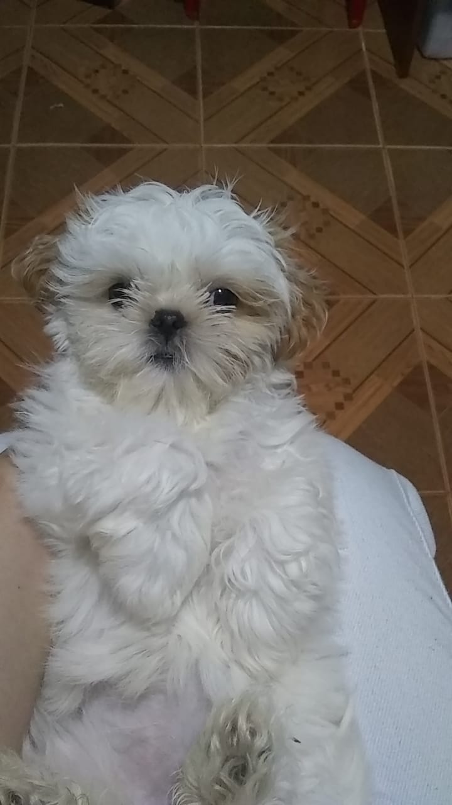
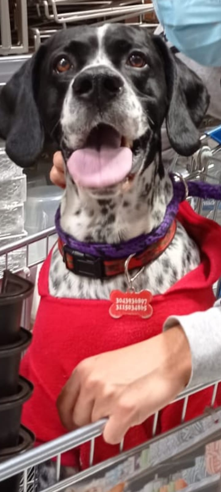
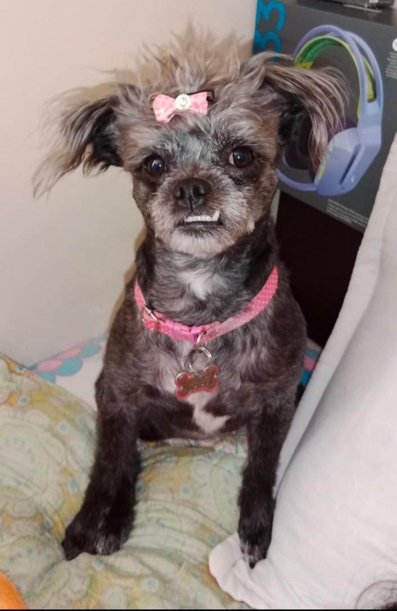
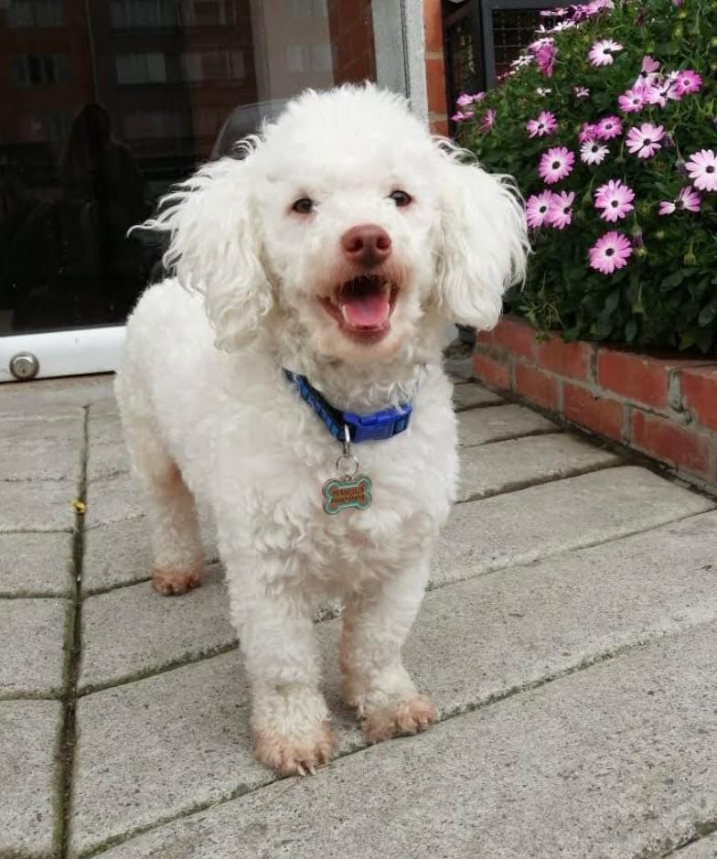
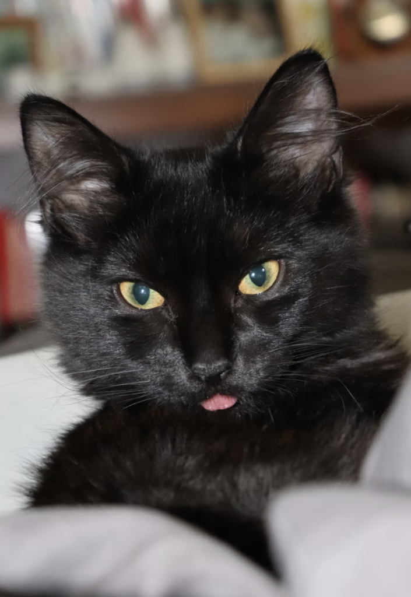

¿Quiénes somos?
Pet Lovers, un grupo de amantes de los animales decididos a crear un blog y dedicarnos a compartir nuestras experiencias y conocimientos del cuidado y bienestar de nuestras mascotas. Brindamos consejos prácticos y entretenimiento para todos.
Nosotr@s
Cada un@ de nuestr@s peludos aporta una experiencia única al blog:

Morita
Es una perrita Shih tzu, tiene dos años, le gusta jugar, caminar y comer. Es muy consentida y la consienten mucho, es tranquila y aveces es juiciosa.

Tiene 3 años, adoptada a los dos meses. Le gusta dormir encima de las piernas de la familia. Su hobbie es mirar por la ventana y, aunque es muy cariñosa y juguetona, también es muy territorial y no le gustan otros animalitos. Le tiene miedo a los desconocidos. Siempre que suena el timbre, corre a esconderse.

Rocco
Pointer inglés blanco y negro de 9 años, de nobleza y dulzura incomparables. Su pelaje elegante y su mirada tierna siempre transmiten amor. Aunque su apariencia es suave, es valiente y siempre está alerta para proteger a su familia.

Winy
es una perrita pequeña de 5 años, llena de energía y siempre dispuesta a jugar. Es hiperactiva, cariñosa, y necesita compañía constante, pues no le gusta estar sola y tiende a llorar cuando lo está. Sus actividades favoritas incluyen jugar con pelotas y correr sin parar. Winy es un cruce entre un Pug y un Fresh Pooder.

Manolo
Fresh Pooder de 6 años, muy tranquilo y perezoso. Adora dormir y le encanta despertarse tarde. Disfruta jugar y su energía se agota rápido, así que prefiere pasar el tiempo siendo consentido o durmiendo cerca de alguien. Le fascina la pizza y es muy juicioso, siempre buscando un poco de cariño y compañía en sus momentos de descanso.

Oreon
Es un gato de 1 año, creció sin acompañantes gatunos por eso se le olvidó ser gato a excepción de su instinto felino salvaje. No se baña como los gatos, no maúlla normal, no salta altas superficies, le gusta salir a la calle, se hace el muerto, se sienta y da la pata con tal que le den su yogurt griego. Vino a cambiar mi mundo y mi percepción de los gatos.
Nuestra misión
Ayudamos a dueños de mascotas a ofrecer el mejor cuidado a sus animales, compartiendo conocimientos y experiencias que hemos adquirido a lo largo de los años. Apoyar a refugios y organizaciones de rescate como hogares de paso y promovemos la adopción responsable.